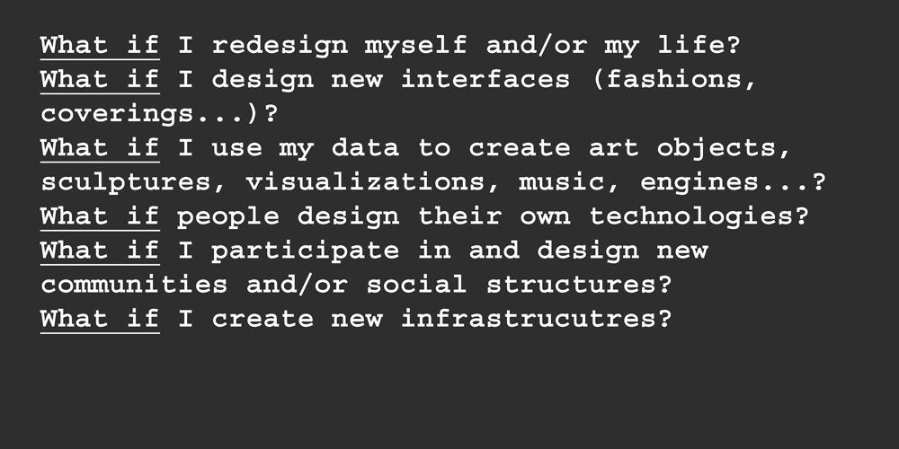

/audrey_desjardins
(16_january_2022)
This week we had the pleasure of assisting to a talk from Audrey Desjardins,
an Industrial Designer and Researcher from Canada, currently teaching at University of
Washington, Seattle.
Audrey has worked a lot with design as a mode of inquiry. She thinks design needs to
provoke a relfection and it has to be focused on asking questions, not only solving
problems. She is also an enthusiast of all the first person methods, as she believes
this is the best way to get to know the reality of what you are studying.
During the talk, Audrey explained some of the projects she had been working on lately, and
two of them more in depth: 'Living in a prototype' and 'The odd interpreters'.
The first one consisted of all the process of building a house inside a van and using this
as a data collection method. They took pictures of each step, timelapses and used a travel
diary to collect data, and then they published the whole project on Instructables. She defined
it as an dutobiographical design.

For the second one was directly related to data collection but in an experimental way. It
was a manner of physically showing how data is flowing all around us, not only in a digital
meaning but also in an environmental meaning (like the sun).
Having the chance of getting to know all these projects it's not only interesting but also
extremely useful. Once you see the process of others, then you can get inspired and maybe
use some techniques or procedures also for your own work. Thanks Audrey for this masterclass
of design!
More about her here:
www.audreydesjardins.com
_________________________________________________________________________
/laura_forlano
(30_january_2022)
This second session of Future Talks was carried out by Laura Forlano, a writer, social scientist
and design researcher, currently working at IIT Institute of Design (Chicago).
Laura told us her experience of being diabetic since 2018 and how this has changed completely her
life. She explained how now her life depends on an AI device that keeps her alive by pushing insulin
through her veins when it is needed. Also how she had some trouble sleeping because her old device
was sending her notifications all the time, inclusively during the night. The fact of waking up every
15-30 minutes because of the notification had as a consequence a severe sleep deprivation, with
the inherent results.
Now, she has another device that is much more efficient called "The MiniMed 670G". Thanks to
technological advances, this device automatically adds the necessary quantity of insulin by analysing
sugar in the blood. This improvement makes it unnecessary to send notifications every 20 minutes.
However, she reflected, tech is not perfect and probably will never be, so we have to choose when to
disobey tech's rules.
As a design researcher, she sees theory as design material, and this is why she explores theories
of the posthuman, questioning the binaries and fighting also for feminism. She is also enthusiastic
about autoethnography in design and using a vignette as a way of documenting.
Finally, Oscar highlighted another slide she shared about 'What if' questions. Asking yourself
'What if' directly brings you to create a hypothesis of something that could happen. Without these
kinds of questions, there wouldn't be improvements in many topics and probably everything would stay
the same. Mixing these questions with a subsequent intervention or experiment may provide very
valuable information from a topic.

More about her here:
www.lauraforlano.org/